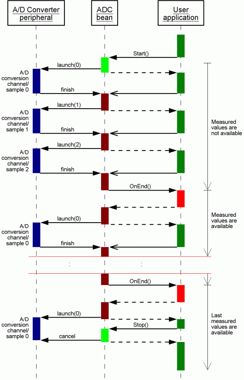
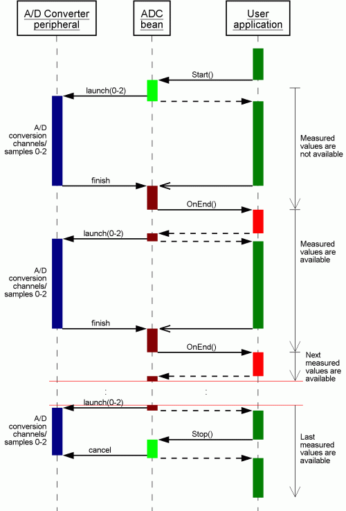
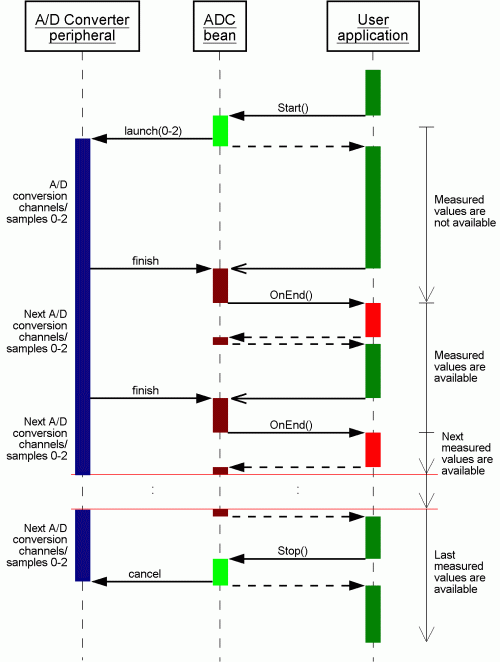
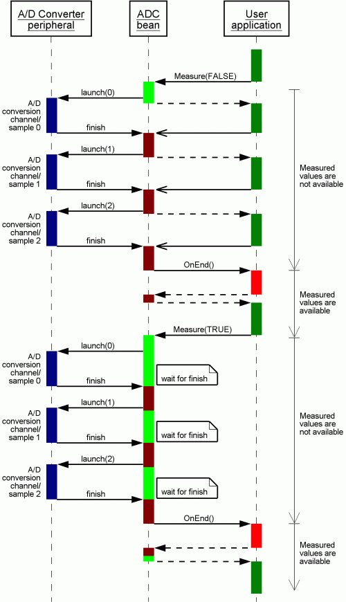
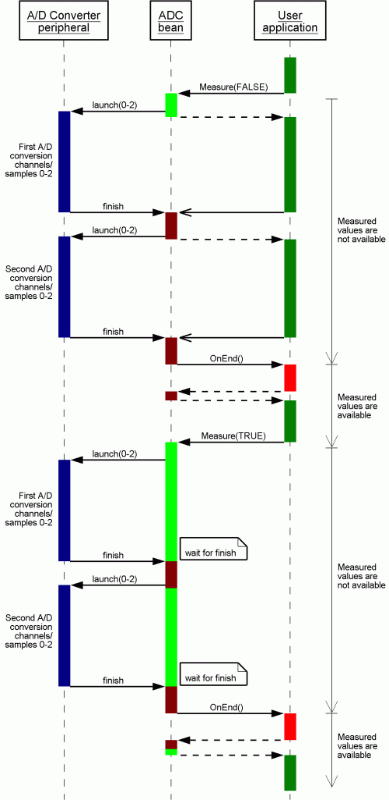
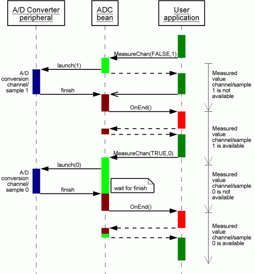
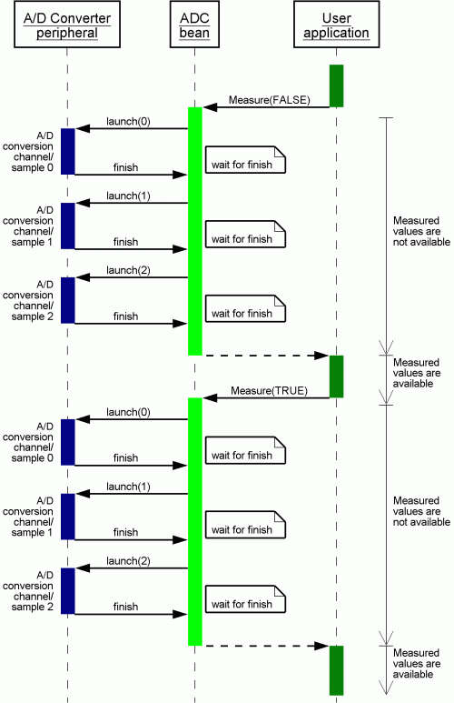
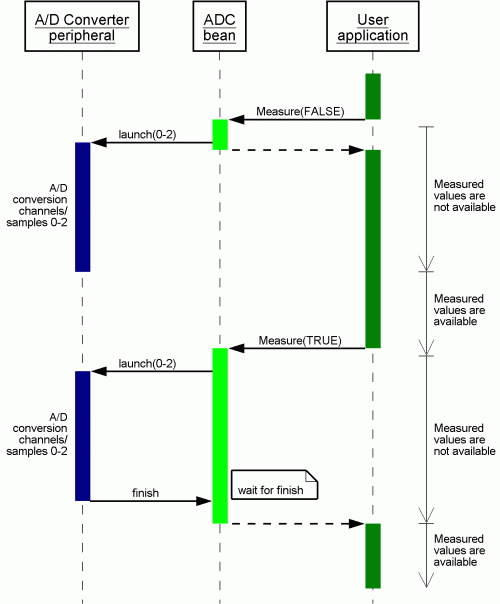
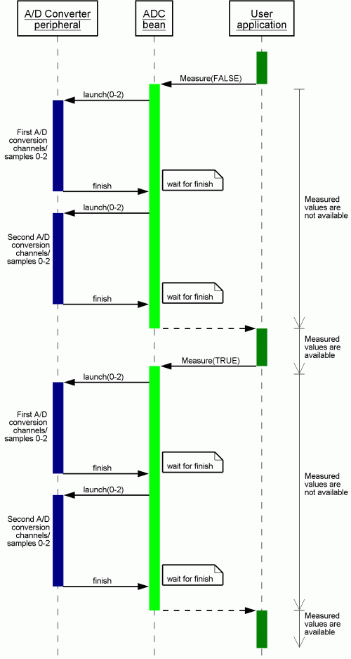

| ADC | |
|
|

The examples are accompanied by sequence charts which demonstrate the sequence of calling the methods and events and internal processing of the A/D conversion. These charts show detailed information about ADC component algorithm for typical usage of this component. Each chart is composed of three processes. The first ADC peripheral process represents a function of the internal ADC peripheral module of CPU. Second ADC component process represents a generated ADC component code (interrupt routines, methods). Third User application process represents a user written code. Second and third processes are processed by CPU core, thus they cannot be performed concurrently and the control flow of CPU core is divided into these processes.
The meaning of the colors used in the diagrams:
 |
Typical settings and usage of ADC component
- (1) Continuous conversion of all channels, with interrupt service
- (2) One conversion of all channels, with interrupt service
- (3) One conversion of a specified channel, with interrupt service
- (4) One conversion of all channels, in polling mode
- (5) One conversion of all channels of each component, in shared mode
(1) Continuous conversion of all channels, with interrupt service
Conversion of all channels/samples is performed repeatedly (using interrupts).
Property Interrupt service is enabled, Number of conversion is set to 1.
Conversion is started using Start method.
When a conversion of all channels/samples is finished the OnEnd event is invoked and a new set of measured values is available.
All these measured values are available for reading until the next measurement cycle is finished.
Conversion can be stopped using Stop method.
The example demonstrates the continuous conversion of three channels/samples.
MAIN.C
#define NUM_MEASUREMENTS 10
unsigned int EvnCnt = 0;
byte Values[3];
void main(void)
{
. . .
AD1_Start(); // Run measurements
//measured data are processed in the events
//this cycle waits for end
for(;;) {
if (EvnCnt == NUM_MEASUREMENTS) {
//after 10 cycles the conversion is stopped
AD1_Stop();
}
. . .
}
}
EVENTS.C
extern unsigned int EvnCnt;
extern byte Values[3];
void AD1_OnEnd(void)
{
EvnCnt++; // Increment counter
//measured values are available and may be read:
AD1_GetValue((byte *)Values); // Get AD conversion results
}
This chart shows a sequence of continuous conversion of all channels if an A/D peripheral does not support measuring all channels at once.
|  |
This chart shows a sequence of continuous conversion of all channels if an A/D peripheral supports measuring all channels simultaneously.
|  |
This chart shows a sequence of continuous conversion of all channels if an A/D peripheral supports measuring all channels simultaneously and in addition continuous mode.
|  |
(2) One conversion of all channels, with interrupt service
All channels are measured after Measure method is invoked.
Property Interrupt service is enabled, Number of conversion is set to 1.
When a conversion of all channels/samples is finished the OnEnd event is invoked and measured values are available (at least until the next conversion is started).
The following example demonstrates conversion of all channels.
MAIN.C
bool ValuesAvailable = FALSE; // control variable
byte Values[3];
void main(void)
{
AD1_Measure(TRUE);
AD1_GetValue((byte *)Values); // Get AD conversion results
. . .
for(;;) {
if (ValuesAvailable) {
ValuesAvailable = FALSE; // clear the control variable
AD1_Measure(FALSE); //start next measurement
}
. . .
}
}
EVENTS.C
extern bool ValuesAvailable;
extern byte Values[3];
void AD1_OnEnd(void)
{
AD1_GetValue((byte *)Values); // Get AD conversion results
ValuesAvailable = TRUE; // set control variable
}
This chart shows a sequence of measurements on all channels if an A/D peripheral does not support measuring all channels simultaneously.
|  |
This chart shows a sequence of measurements on all channels if an A/D peripheral supports measuring all channels simultaneously. Number of measurement is set to 2.
|  |
(3) One conversion of a specified channel, with interrupt service
The conversion of single channel can be done using MeasureChan method.
Property Interrupt service is enabled, Number of conversion is set to 1.
When a conversion of a channel/sample is finished the OnEnd event is invoked and the measured value is available by until the next conversion is started.
The following example demonstrates periodic measurement of three channels in the loop.
MAIN.C
bool ValueAvailable = FALSE; // control variable
byte Value;
byte channel = 0;
void main(void)
{
. . .
AD1_MeasureChan(TRUE, channel);
AD1_GetChanValue(channel, &Value);
for(;;) {
if (ValueAvailable) {
ValueAvailable = FALSE; // clear the control variable
// an action, i.e. process the measured value
++channel;
if (channel > 3) channel = 0;
AD1_MeasureChan(FALSE, channel);
}
. . .
}
}
EVENTS.C
extern bool ValueAvailable;
extern byte Value;
extern byte channel;
void AD1_OnEnd(void)
{
// Get AD conversion results of the specified channel
AD1_GetChanValue(channel, &Value);
ValueAvailable = TRUE; // set control variable
}
The following chart shows single conversion of selected channel, the first conversion without waiting for a result and the second conversion with waiting for a result.
|  |
(4) One conversion of all channels, in polling mode
The measurement on all channels is performed in Measure method, i.e., Measure method does not finish until the conversion
of all channels is finished.
Property Interrupt service is disabled, Number of conversion is set to 1.
MAIN.C
bool ValuesAvailable = FALSE; // control variable
byte Values[3];
void main(void)
{
. . .
AD1_Measure(FALSE); // measure all channel, not wait for result
while (AD1_GetValue((byte *)Values) == ERR_NOTAVAIL); // Wait for result
. . .
AD1_Measure(TRUE); // measure all channel, wait for result
AD1_GetValue((byte *)Values); // Get AD conversion results
.
. .
}
This chart shows a sequence of conversion of all channels if an A/D peripheral does not support measuring all channels simultaneously.
|  |
This chart shows a sequence of conversion of all channels if an A/D peripheral supports measuring all channels at once.
|  |
This chart shows a sequence of conversion of all channels if an A/D peripheral supports measuring all channels simultaneously. Number of conversion is set to 2.
|  |
(5) One conversion of all channels of each component, in shared mode
Several ADC components can be used for one ADC device. This example assumes
that two AD converter components 'AD1' and 'AD2' in the project share one ADC device
(Sharing properties set to enabled).
Two channels (AN0 and AN2 pins) are set in the component 'AD1' and one channel (AN1 pin) is set in the component 'AD2'.
Number of conversion of each component is set to 1.
MAIN.C
bool ADResult1; // Flag for component 'AD1'
bool ADResult2; // Flag for component 'AD2'
byte Values[2]; // component 'AD1' is set to two channels measurement
byte Value; // component 'AD2' is set to one channels measurement
void main(void)
{
ADResult1 = FALSE;
ADResult2 = FALSE;
AD1_Measure(FALSE); // Run measurement of two channels from component 'AD1'
AD2_Measure(FALSE); // Run measurement of two channels from component 'AD2'
.
. .
while (!ADResult1); // Wait for measurement complete
AD1_GetValue8((byte *)Values); // Get AD conversion results of component 'AD1'
while (!ADResult2); // Wait for measurement complete
AD1_GetValue8(&Value); // Get AD conversion result of component 'AD2'
}
EVENTS.C
extern bool ADResult1;
extern bool ADResult2;
void AD1_OnEnd(void)
{
/* Measurement of two channels from component 'AD1' is completed */
ADResult1 = TRUE;
}
void AD2_OnEnd(void)
{
/* Measurement of one channel from component 'AD2' is completed */
ADResult2 = TRUE;
}